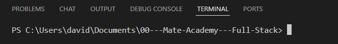

Your First Repository and Commit
Intro
Aqui iremos aprender a utilizar os comandos do Git.
Aqui iremos aprender a utilizar os comandos do Git.
1) Apos criarmos um arquivo que desejamos para as aulas em nosso PC, podemos selecionar em nosso VSCode e clicar em terminal.
2) Apos clicarmos em terminal, clicamos em new terminal, com isso iremos verificar a pasta que ja estamos selecionado:

3) Com isso iremos iniciar nosso projeto criando um repositorio no Git, o primeiro comando que iremos usar e o:
4) git innit, com isso nao iremos ter nem um arquivo dentro do projeto recem criado, com isso agora podemos criar um novo arquivo tanto sendo uma pasta para organizar melhor os arquivos oque e mais recomendado.
5) Apos criado o arquivo HTML ou outro desejado ja teremos uma notificacao, podemos clicar em nosso terminal novamente e digitar git status.
6) Com ele iremos conseguir verificar os status, onde ira mostrar que ja teremos um arquivo modificado, assim que terminarmos as modificacoes necessarias de nosso arquivo, podemos estar finalizando o enviando para nosso repositorio.
7) Para estar o enviando iremos fazer os seguintes passos:
8) Terminal digitar git add . e enter com esse atalho ele enviar todas as atualizacoes feitas de uma vez. Se desejarmos enviar apenas um arquivo podemos colocar git add index.html, ou seja, com nome do arquivo que sera enviado.
9) git commit -m "Aqui o nome do arquivo". Enter.
Com ele conseguimos verificar todos os comandos
Podemos estar utlizando o -a junto do -m. Exemplo: git commit -a -m "desc". Com isso ja enviamos diretamente nosso commit.